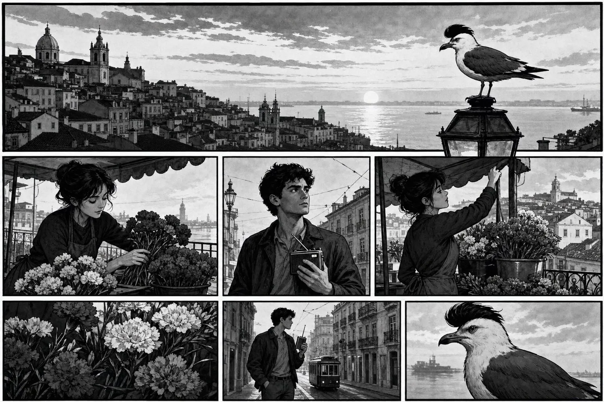
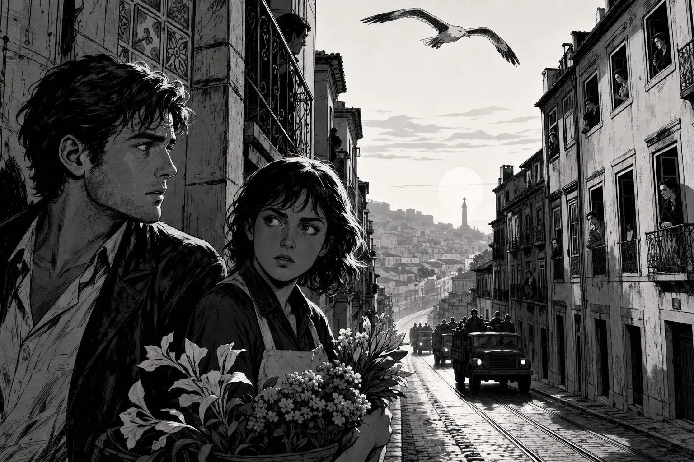
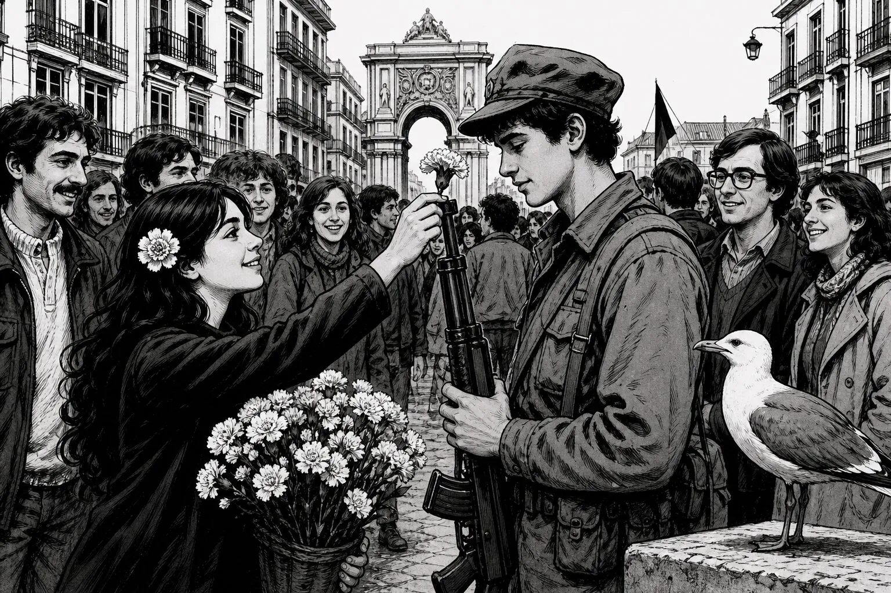
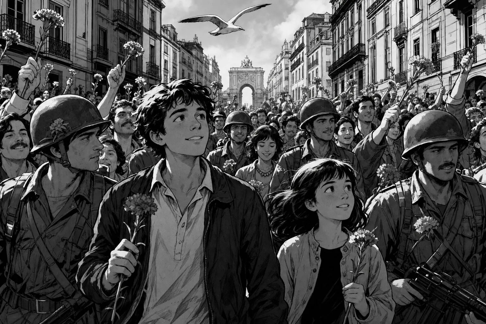
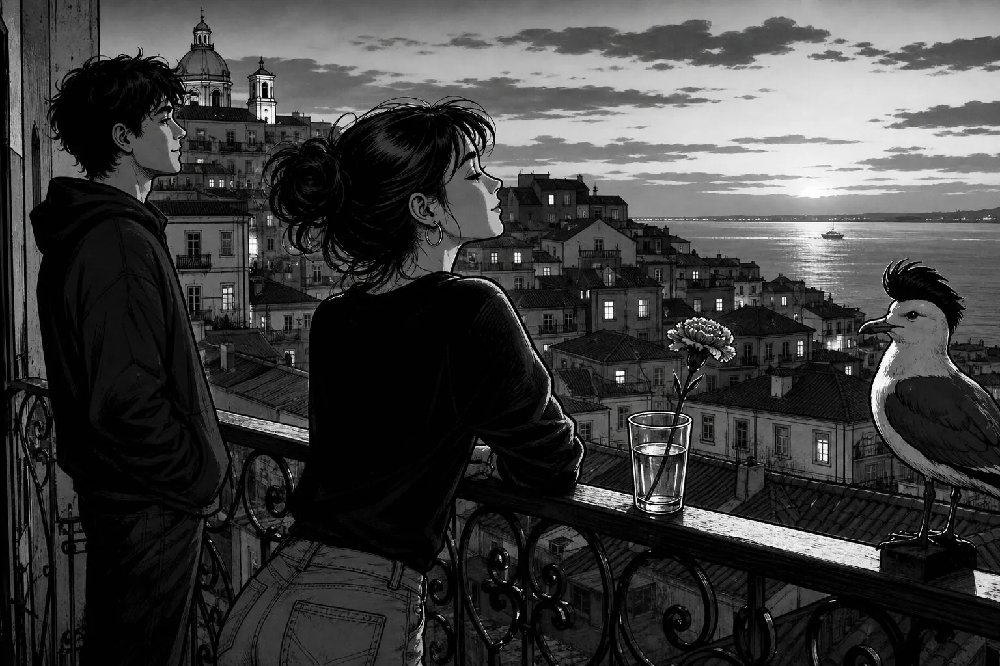

25 de Abril · 1/5
Setup

GaivotaA cidade ainda dorme. Mas o rádio… não.
MartaRui, porque estás acordado tão cedo?
RuiOuve. Há uma canção estranha no rádio.
25 de Abril · 2/5
Rising action

RuiDizem que o exército está na rua.
MartaCom medo… ou com esperança?
GaivotaOs fuzis chegaram. O povo ainda espera.
25 de Abril · 3/5
Turning point

MartaLeva um cravo. Por favor.
Soldado…Obrigado.
RuiOlha — as flores nos fuzis!
25 de Abril · 4/5
Consequence

MulherLiberdade!
RuiO povo está na rua. Sem guerra.
GaivotaHoje as flores falaram mais alto que o medo.
25 de Abril · 5/5
Resolution

MartaAcabou?
RuiComeçou. A liberdade chegou.
GaivotaGuardo este dia. Portugal acordou.
Study pack
100 new words · EN
Study pack — 25 de Abril
How to use: Read once without translating. Then check the glossary. Answer aloud in Portuguese if you can.
1. Glossary (100) — PT → EN
cravocarnation (flower)
revoluçãorevolution
liberdadefreedom / liberty
ditaduradictatorship
povopeople / the people
soldadosoldier
rádioradio
notícianews
manhãmorning
madrugadaearly dawn
multidãocrowd
florflower
fuzilrifle
pazpeace
coragemcourage
mudançachange
governogovernment
capitãocaptain
exércitoarmy
quartelbarracks
sinalsignal
cançãosong
vozvoice
gritoshout / cry
janelawindow
varandabalcony
bandeiraflag
vermelhored
irmãobrother
irmãsister
trabalhadorworker
estudantestudent
floristaflorist
lojashop
praçasquare
AbrilApril
vinte e cincotwenty-five
ontemyesterday
agoranow
nuncanever
semprealways
livrefree (adj.)
presoimprisoned
falarto speak
cantarto sing
pararto stop
entrarto enter
sairto leave
darto give
pôrto put / place
trazerto bring
mudarto change
acabarto end / finish
começarto begin
nascerto be born
morrerto die
viverto live
sorrirto smile
diaday
horahour / time
minutominute
verdadetruth
mentiralie
direitoright (legal/moral)
justiçajustice
democraciademocracy
censuracensorship
acordadoawake
cedoearly
estranhostrange
obrigadothank you
guerrawar
sem guerrawithout war
por favorplease
os cravos nos fuziscarnations in the rifles
o povo está na ruathe people are in the street
a liberdade chegoufreedom has arrived
Estado NovoEstado Novo (dictatorship)
MFAArmed Forces Movement
cravoscarnations (pl.)
fuzisrifles (pl.)
oficialofficer
civilcivilian
transiçãotransition
quasealmost
sangueblood
sem sanguebloodless / without blood
esperarto wait / hope
oferecerto offer
aceitarto accept
cantar altoto sing loudly
na ruain the street
no rádioon the radio
na janelaat the window
esta manhãthis morning
este diathis day
Portugal acordouPortugal woke up
as flores falaramthe flowers spoke
guarda este diakeep / remember this day
hoje as florestoday the flowers
2. Comprehension
- Que dia é?
- O que ouve o Rui no rádio?
- O que oferece a Marta ao soldado?
- O povo está na rua com guerra?
- Como acaba a história?
3. Cultural note
25 de Abril is Portugal’s democracy day. The red carnation became the symbol of a nearly bloodless revolution that ended the Estado Novo. Every year, Portuguese people still remember the morning the flowers met the rifles.